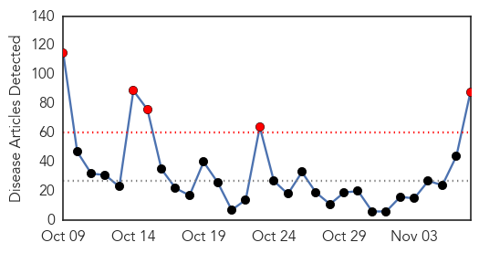
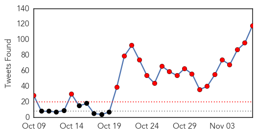
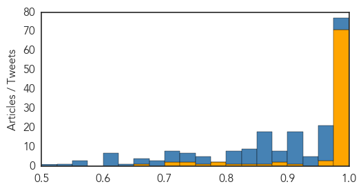
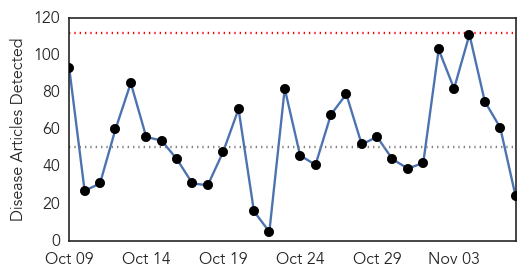

Ebola
30-Day Web Trend
5 alerts, 0 warnings

30-Day Twitter Trend
26 alerts, 0 warnings

Article Locations

Article Confidences
Top Articles:
- 1.000
- Sierra Leone is free of Ebola, 18 months and 4,000 deaths after outbreak
- 1.000
- Sierra Leone’s Ebola Outbreak Is Officially Over — But the Country Is Still Recovering
- 1.000
- WHO declares end of Ebola outbreak in Sierra Leone, but neighbour Guinea struggles to end virus
- 1.000
- Sierra Leone declared free of Ebola
- 1.000
- Sierra Leone’s Ebola Outbreak Is Over, WHO Says
- 1.000
- Sierra Leone declared free of Ebola, as Guinea struggles
- 1.000
- Sierra Leone Declared Free of Ebola Transmissions
- 1.000
- Sierra Leone's Ebola Outbreak Is Over, WHO Says : The Two-Way : NPR
- 1.000
- Ebola: Science should be at the service of survivors
- 1.000
- WHO declares end of Ebola outbreak in Sierra Leone
- 1.000
- Ebola: After learning hard lessons Sierra Leone is better prepared should the disease return
- 1.000
- Ebola: The epidemic's timeline
- 1.000
- Sierra Leone officially declared free of Ebola: WHO
- 1.000
- Sierra Leone Declared Free of Ebola Virus by UN Health Agency
- 1.000
- WHO commends Sierra Leone for stopping Ebola virus transmission - WHO
- 1.000
- Ebola: The epidemic's timeline - Sierra Leone
- 1.000
- Sierra Leone is free of Ebola, says the WHO
- 1.000
- WHO declares end of Ebola outbreak in Sierra Leone, but neighbour Guinea struggles to end virus
- 1.000
- Celebrations as WHO declares Sierra Leone Ebola-free
- 0.999
- Sierra Leone declared free of Ebola after outbreak that killed almost 4,000 (From Wiltshire Business Online)
- 0.999
- Sierra Leone celebrates end of Ebola epidemic
- 0.999
- Scots praised for role in Sierra Leone beating Ebola
- 0.999
- WHO declares end of Ebola outbreak in Sierra Leone
- 0.999
- Sierra Leone declared free of Ebola after outbreak that killed almost 4,000 « Shropshire Star
- 0.999
- Sierra Leone celebrates end of Ebola epidemic
- 0.999
- UPDATE 1-Sierra Leone celebrates end of Ebola epidemic
- 0.999
- WHO: Sierra Leone is free of Ebola
- 0.999
- WHO to declare end of Ebola in Sierra Leone
- 0.999
- Ebola ends in Sierra Leone
- 0.999
- With Sierra Leone Expected To Be Declared Ebola-Free On Saturday, Guinea
- 0.999
- Sierra Leone declared Ebola free after 42 days without reports of the virus
- 0.999
- Sierra Leone declared free of Ebola after outbreak that killed almost 4,000
- 0.999
- The end of Ebola in Sierra Leone
- 0.999
- Sierra leone declared free of ebola after outbreak that killed almost 4,000
- 0.999
- Sierra Leone declared free of Ebola after outbreak that killed almost 4,000
- 0.999
- WHO Declares Sierra Leone Ebola-Free
- 0.999
- Sierra Leone celebrates end of Ebola epidemic
- 0.999
- WHO Director-General addresses Princeton - Fung Global Forum on lessons learned from the Ebola crisis - Sierra Leone
- 0.999
- Sierra Leone declared free of Ebola after outbreak that killed almost 4,000 « Guernsey Press
- 0.999
- The end of Ebola in Sierra Leone
- 0.998
- WHO declares Sierra Leone free of Ebola
- 0.998
- Sierra Leone celebrates end of Ebola epidemic
- 0.998
- Sierra Leone celebrates end of Ebola epidemic
- 0.998
- WHO declares end of Ebola outbreak in Sierra Leone
- 0.998
- Sierra Leone Counts Down Until Ebola-Free Declaration
- 0.998
- Britain hails end of Ebola outbreak in Sierra Leone - Xinhua
- 0.998
- Sierra Leone Declared Free from Ebola, as Guinea Struggles
- 0.998
- Sierra Leone celebrates end of Ebola epidemic
- 0.998
- Ebola Echo from Saudi Arabia: Ambassador Joins Pres. Koroma in hailing Sierra Leoneans
- 0.997
- Sierra Leone celebrates end of Ebola epidemic
Showing top 50 articles...
Top Tweets:
- 1.000
- WHO commends Sierra Leone for stopping Ebola virus transmission - World Health Organization https://t.co/IgzK47qyhx ebola EVD
- 0.999
- WHO commends Sierra Leone for stopping Ebola virus transmission - https://t.co/ta7jAz8Z5J ebola
- 0.998
- World Health Organization (WHO) declares Sierra Leone free of Ebola - https://t.co/HzrV4q7mDh ebola
- 0.998
- Cudurka Ebola Kama Jiro Sierra Leone - https://t.co/CasmpKSvkf ebola
- 0.997
- Sierra Leone after Ebola: What next? - https://t.co/kUrXqt6SA6 ebola
- 0.996
- Sierra Leone May Be Ebola-Free But The Virus Still Casts A Shadow - https://t.co/O7Lhdah5sq ebola
- 0.996
- Sierra Leone May Be Ebola-Free But The Virus Still Casts A Shadow - NPR https://t.co/fS6uepVNWW ebola EVD
- 0.996
- Ebola outbreak: Sierra Leone to be declared disease-free - https://t.co/UWMTbjvHvL ebola
- 0.995
- Ebola outbreak: Sierra Leone declared free of disease - https://t.co/sbhWpRvarH ebola
- 0.994
- WHO to declare end of Ebola outbreak in Sierra Leone - https://t.co/IJIf57vIq7 ebola
- 0.994
- Cracking the Code of the Ebola Virus - https://t.co/fMU2ZrqREq ebola
- 0.993
- World Health Organisation declares Sierra Leone Ebola-free - https://t.co/SQ1MIvyrNv ebola
- 0.993
- Sierra Leone celebrates end of Ebola epidemic - https://t.co/nHOqFbVYPt ebola
- 0.993
- Sierra Leone celebrates end of Ebola epidemic - https://t.co/mvg99pKv1F ebola
- 0.993
- Sierra Leone celebrates end of Ebola epidemic - Reuters https://t.co/pUIKXRWlWZ ebola EVD
- 0.993
- Sierra Leone Celebrates The End Of The Ebola Outbreak - https://t.co/JH0cxHydnj ebola
- 0.991
- Statement on the end of the Ebola outbreak in Sierra Leone - https://t.co/4UWNwkelQM ebola
- 0.991
- Sierra Leone celebrates end of Ebola epidemic - Irish Times https://t.co/K7SnL3XdU2 ebola EVD
- 0.991
- Ebola Eliminated In Sierra Leone. - https://t.co/u3EllbHDh4 ebola
- 0.990
- Sierra Leone celebrates end of Ebola epidemic after nearly 4000 deaths - https://t.co/LprBAqToTj ebola
- 0.989
- Sierra Leone celebrates end of Ebola - https://t.co/U1wwNhfpdE ebola
- 0.989
- Health Officials: Sierra Leone Declared Free of Ebola Transmissions - https://t.co/lJUo6sKSfA ebola
- 0.989
- Ebola outbreak: Sierra Leone declared free of disease - BBC News https://t.co/QgtR9jRXUx ebola EVD
- 0.988
- WHO declares Sierra Leone Ebola free - https://t.co/7EMAMin3R0 ebola
- 0.988
- Sierra Leone celebrates end of Ebola epidemic that killed 4000 people - https://t.co/vKbrmPjMiI ebola
- 0.982
- WHO officially declares Sierra Leone Ebola-free - https://t.co/ciRu3928KV ebola
- 0.982
- WHO declares Sierra Leone free of Ebola - https://t.co/TC2s47Ukm5 ebola
- 0.982
- Ebola: WHO 'delayed Sierra Leone state of emergency' - https://t.co/ynM3r09wTI ebola
- 0.982
- Amref Health Africa Ebola study published in Pan African Medical Journal - https://t.co/IpTCbsVSk7 ebola
- 0.981
- WHO: Sierra Leone is free of Ebola - https://t.co/1g0peoLBGk ebola
- 0.979
- Ebola warded off – for now - https://t.co/J7wL0ueg8t ebola
- 0.978
- How Ebola-hit country prepares to reboot - https://t.co/ryKThaNta2 ebola
- 0.978
- Ebola has been officially eliminated from Sierra Leone - https://t.co/hf7z1xlpCV ebola
- 0.977
- Sierra Leone to be cleared of Ebola - https://t.co/KgjqdVZ1Kf ebola
- 0.977
- Ebola crisis: Sierra Leone President Koroma thanks 'hero' UK medics - https://t.co/4b3IqsoIXa ebola
- 0.977
- EBOLA/EVD [to 31 October 2015] - https://t.co/CF5aWHDbSb ebola
- 0.976
- Sierre Leone declared free of Ebola virus - https://t.co/SY5s8WaALc ebola
- 0.976
- Sierra Leone is free of Ebola, says the WHO - https://t.co/uxjl1lr7Zw ebola
- 0.976
- Sierra Leone Counts Down Until Ebola-Free Declaration - https://t.co/Sl1KAT0cl1 ebola
- 0.975
- Sierra Leone marks end of Ebola - The Nation Newspaper https://t.co/e8nHVzIkxf ebola EVD
- 0.974
- Simple saliva test detects Ebola in a jiffy - https://t.co/ZwaP4S7Img ebola
- 0.970
- WHO to declare Sierra Leone 'free of Ebola' - FRANCE 24 https://t.co/pX1ur6QTTC ebola EVD
- 0.969
- WHO to declare end of Ebola in Sierra Leone - https://t.co/eLD9tKHMuW ebola
- 0.969
- WHO to declare end of Ebola in Sierra Leone - https://t.co/bmISXdE7Bz ebola
- 0.969
- WHO to declare end of Ebola in Sierra Leone - https://t.co/2aISskBiQP ebola
- 0.969
- Scots praised for role in Sierra Leone beating Ebola - https://t.co/g9laVIdSQb ebola
- 0.967
- Sierra Leone set to be declared 'Ebola free' after 42 days without reports of the virus - https://t.co/daP4XYT8Bj ebola
- 0.964
- Sierra Leone declared Ebola-free - https://t.co/Jtgz9hHxVw ebola
- 0.964
- Sierra Leone Declared Ebola-Free - https://t.co/rmWY7rbNSK ebola
- 0.964
- RT: Midnight has passed in SierraLeone, and so has the Ebola virus disease epidemic there. 42 days without a case. CONGRATULAT…
Showing top 50 tweets...
Unknown
30-Day Web Trend
0 alerts, 0 warnings

30-Day Twitter Trend
0 alerts, 0 warnings

Article Locations

Article Confidences

Top Articles:
- 0.955
- Oregon school pumpkin carving party suspected in norovirus outbreak — Health — Bangor Daily News — BDN Maine
- 0.906
- Last year's enterovirus D68 outbreak more widespread than first thought
- 0.842
- How An ASHA Worker Is Spreading Awareness
- 0.797
- Victims of severe side effects call for removal of HPV vaccine
- 0.730
- Emails from Paris Kosher store gunman to ‘handler’ revealed
- 0.727
- Why I wear a remembrance poppy: The story of Private John O’Leary
- 0.707
- Leaders of Taiwan and China hold historic talks
- 0.707
- Russia to send fleet of planes to Egypt to bring home tourists
- 0.702
- Kremlin slams Charlie Hebdo cartoons on Russian air crash
- 0.702
- Burma prepares for first free elections in 25 years
- 0.664
- Malaria Outbreak Hits Karoi
- 0.660
- Longreads: 5 Diseases You Didn't Know to Worry About
- 0.654
- A game-changer for LGBT health
- 0.640
- More than 700 get surgery in health camp
- 0.614
- Pet cat from Chimacum area found to have rabies; discovery marks first time in state since 2002 -- Port Angeles Port Townsend Sequim Forks Jefferson County Clallam County Olympic Peninsula Daily news
- 0.610
- 14 lose eyesight after botched cataract surgery in Maharashtra
- 0.603
- Update: Montague Center boil order lifted
- 0.581
- Thirteen injured in Colectiv fire die during the weekend, DNA makes arrests
- 0.581
- Thirteen injured in Colectiv fire die during the weekend, DNA makes arrests
- 0.581
- Thirteen injured in Colectiv fire die during the weekend, DNA makes arrests
- 0.579
- A FAILING HEALTH CARE SYSTEM
- 0.575
- GreyHeart launches home based Medicare
- 0.555
- Stop the violence. Protect health care
- 0.507
- Health Audit report does not support Shaw's claim of infection at Cornwall in July
Top Tweets:
- 0.773
- Hay un momento en que en el amor se aprecia mucho la buena compañía
- 0.752
- RT: En otras ciudades de Venezuela: Obras de teatro, ferias de libros, exposición de artes. En Puerto Ordaz: El Circo de J…
- 0.732
- RT: No sé por qué no se dejan de joder y hacen un todo-en-uno Facettergram y ya. Podrida me tienen.
- 0.707
- RT: Despiertame cuando pase el temblor -8- Jaja es inevitable no pensar en esa canción después de un temblor -,-' Tipico …
- 0.702
- RT: Nunca escuché que a las mujeres les doliera la cabeza en un probador de ropa.
- 0.652
- RT: En zonas de los Estados Mérida, Táchira y Zulia se reporta fue sentido el movimiento sísmico de las 2:30 am...
- 0.636
- RT: Reportes iniciales indican de una posible intensidad de 5.4 grados en escala de Richter...
- 0.621
- RT: NO OBSTACULICES el paso viendo la lluvia en plena entrada de la estación. Piensa en los demás DaleRT https://t.co/cgvUcI…
- 0.598
- RT: Twitter debería cambiar el corazón por algo que represente de verdad al amor. Como un pedazo de pizza o un vaso de Fern…
- 0.579
- RT: Ayer tenia estrella de favorito, hoy en la mañana el corazón, ahora volvió la estrella, no entiendo.
- 0.552
- Stronger flu vaccine on offer in 2016 following record number of cases https://t.co/vGhNdEoUP9 https://t.co/oagSznOFlR
- 0.540
- RT: Querido Papá Noel: quería pedirte un cuerpo delgado y una billetera gorda. Tratá de no confundirte como el año pasado. Besito…
- 0.540
- RT: 2:30 am reportan fuerte sismo en las ciudades de Mérida y San Cristobal. A esperar el reporte de funvisis
- 0.529
- El temblor fue prácticamente en toda Suramerica
- 0.526
- RT: via: ":El sueldo mensual en Venezuela equivale a 9 latas de leche condensada Sí, aunque es difícil de creer! http…